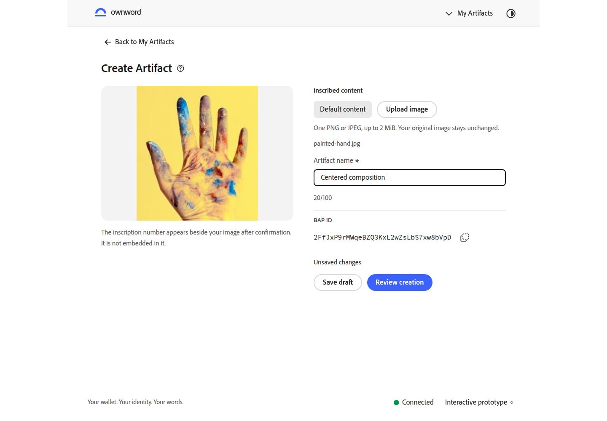

任务标题恢复左对齐
按您的反馈恢复任务页面原有的标题对齐方式。标题、说明和内容沿左侧基准组织，页面主体容器保持居中。
同一数据、英文浅色、1440 × 1000 浏览器视口。调整前取上轮已提交的居中截图，基线 b4846d1；调整后为当前页面。点击截图查看原尺寸。
身份任务
标题、说明与表单沿同一左侧基准组织，恢复之前的阅读顺序。


内容确认
标题与说明恢复左对齐，与作者、正文和影响说明形成连续的阅读关系。


Artifact 创建
标题与帮助按钮组成一组靠左排列，沿用原有预览和表单两栏布局。


本轮检查
删除上一轮任务标题居中的页面规则，使用原有左对齐布局。构建和四模块模型检查通过；定向复核三个页面、320px、中文深色及帮助按钮键盘操作，证据链接见上方。
阅读正文居中与编辑器宽度沿用上轮成果。用户视觉复核待确认。